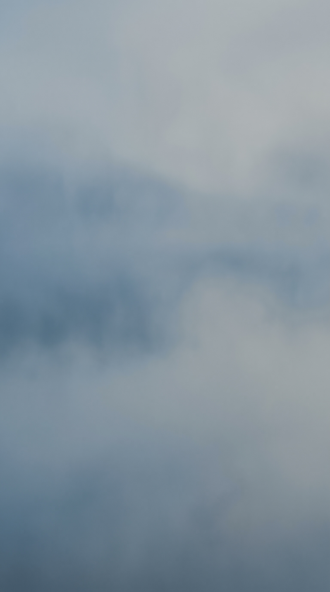

1 · gs_paper_drafting.jpg
Zeichenblatt stahlblau, leer (Grund wie bg #20384F, mit Papierstruktur) · image · 1536x2752 · keine Schleife · 2 Credits

Stand 2026-11-02 · Higgsfield Ultra · 30 Bausteine · 70 Credits · Lizenz: Higgsfield Terms of Service section 4.4: 'Company does not claim ownership of any of your Inputs or Outputs, nor does it restrict your commercial use of Outputs.' Rights in exported Outputs survive cancellation. (Wortlaut wie im Scutoria-Paket vom 2026-10-30.)
Zeichenblatt stahlblau, leer (Grund wie bg #20384F, mit Papierstruktur) · image · 1536x2752 · keine Schleife · 2 Credits
Transparentpapier hell, leichte Kreuzfalte · image · 1536x2752 · keine Schleife · 2 Credits

Karopapier hell fuer das Rechenblatt · image · 1536x2752 · keine Schleife · 2 Credits

Karopapier dunkel stahlblau · image · 1536x2752 · keine Schleife · 2 Credits

Millimeterpapier hell · image · 1536x2752 · keine Schleife · 2 Credits

Zeichentisch von oben bei Tageslicht, leerer Bogen, Bleistift, Zirkel, unbeschriftetes Zeichendreieck · image · 1536x2752 · keine Schleife · 2 Credits

Zeichentisch von oben bei Nacht, stahlblauer Bogen, Bleistift, Zirkel, Papierrolle · image · 1536x2752 · keine Schleife · 2 Credits

Himmelsverlauf Abend, sky_top #10223A nach haze #4B6F8F, wolkenlos · image · 1536x2752 · keine Schleife · 2 Credits

Himmel Tag, gedaempft, feine hohe Wolken · image · 1536x2752 · keine Schleife · 2 Credits

Sturmwolken mit Regenschleiern (Lastfall Wind, Taifun); Stimmung, keine Darstellung eines echten Ereignisses · image · 1536x2752 · keine Schleife · 2 Credits

Dunst und Nebel stahlblau-grau · image · 1536x2752 · keine Schleife · 2 Credits

Clip: Beton fliesst aus dem Pumpenschlauch in die Schalung; Startbild ist gs_real_concrete_pour.jpg · video · 1080x1920 · 8.03 s · keine Schleife · 10 Credits

Video kling_o3_flf · Job e388c311-3637-4a70-bf9e-e06d25aa60c6 · 10 Credits
Abnahme Sichtpruefung 03.11.: keine Schrift, keine Firmennamen, kein Gesicht; generischer Ort, kein reales Bauwerk; im Video KI-Darstellung · kein Foto · Nahtfehler erstes/letztes Bild 23.0/255 · Helligkeit t0 43.3/43.1/34.2 %, Mitte 43.9/43.5/36.2 % · Textzone 42.9 %
Video: Fresh grey concrete flows steadily out of the pump hose into the formwork between the reinforcement bars, the gloved hands guide the hose slightly, small splashes, documentary feel, static camera, no face, no text, no logo.
Realbild: Ingenieur von hinten mit Plan vor Baustelle · image · 1536x2752 · keine Schleife · 2 Credits

Realbild: Krane ueber Hochhaus-Rohbau, Luftbild Daemmerung · image · 1536x2752 · keine Schleife · 2 Credits

Realbild: Schneidrad einer Tunnelbohrmaschine, Mensch als Massstab · image · 1536x2752 · keine Schleife · 2 Credits

Realbild: Vermesser von hinten am Tachymeter · image · 1536x2752 · keine Schleife · 2 Credits

Realbild: Historische Baustelle um 1900, Sepia (als KI-Darstellung kennzeichnen, nie als Archivfoto) · image · 1536x2752 · keine Schleife · 2 Credits

Realbild: Tunnelportal im Gebirge mit Baustelleneinrichtung (Fassung 2, ohne Fahrzeuge) · image · 1536x2752 · keine Schleife · 2 Credits

Realbild: Beton fliesst aus dem Pumpenschlauch in die Schalung · image · 1536x2752 · keine Schleife · 2 Credits

Realbild: Bruecke im Freivorbau ueber Tal · image · 1536x2752 · keine Schleife · 2 Credits

Realbild: Lange Meeresbruecke, Pfeilerreihe bis zum Horizont · image · 1536x2752 · keine Schleife · 2 Credits

Realbild: Pylon mit Hauptkabel, Arbeiter von hinten auf dem Laufsteg · image · 1536x2752 · keine Schleife · 2 Credits

Realbild: Staumauer-Krone mit Stausee, Luftbild · image · 1536x2752 · keine Schleife · 2 Credits

Realbild: Schleusenkammer, Wasser stroemt ein · image · 1536x2752 · keine Schleife · 2 Credits

Realbild: Nietreihe an altem Stahltraeger, Makro · image · 1536x2752 · keine Schleife · 2 Credits

Realbild: Schwerlastkran hebt Stahlsegment · image · 1536x2752 · keine Schleife · 2 Credits

Realbild: Sturmflut-Sperrwerk mit Stahltor · image · 1536x2752 · keine Schleife · 2 Credits

Realbild: Bohrpfahlgeraet auf dem Baugrund · image · 1536x2752 · keine Schleife · 2 Credits

Realbild: Felskaverne mit Arbeitslicht, Mensch winzig · image · 1536x2752 · keine Schleife · 2 Credits

Realbild: Baggerschiff spuelt Sand auf (Landgewinnung) · image · 1536x2752 · keine Schleife · 2 Credits

Quelle: manifest.json und LICENSE.md in diesem Ordner.